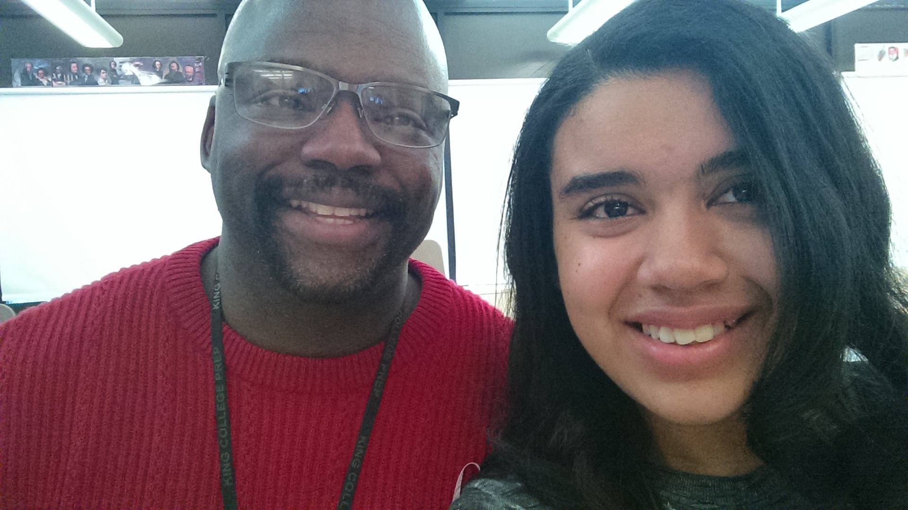

Since the fall of 2012, I have been attending King College Prep. During that time, I have recieved a solo competition award(2014), was involved in one school play "The Wiz"(2014), and won first place in my 3rd period Pre Calculus class for the 2015 Math Bowl(2015). I will be entering my final year of high school as a senior and graduate in 2016.
For college I am interested in studying Music Performance: Voice/Vocal at Howard University, The University of the Arts- Philadelphia, Western Michigan University, Clark Atlanta, Columbia College Chicago, or Roosevelt University.
This is a picutre of King.
Part of the concert choir. From right to left the people are: Candace, Michelle, Briana, Djeinabou, Chloe, Jasma, and myself.
This is a picture of the vocal instructor, Bobbie Knight, and myself.